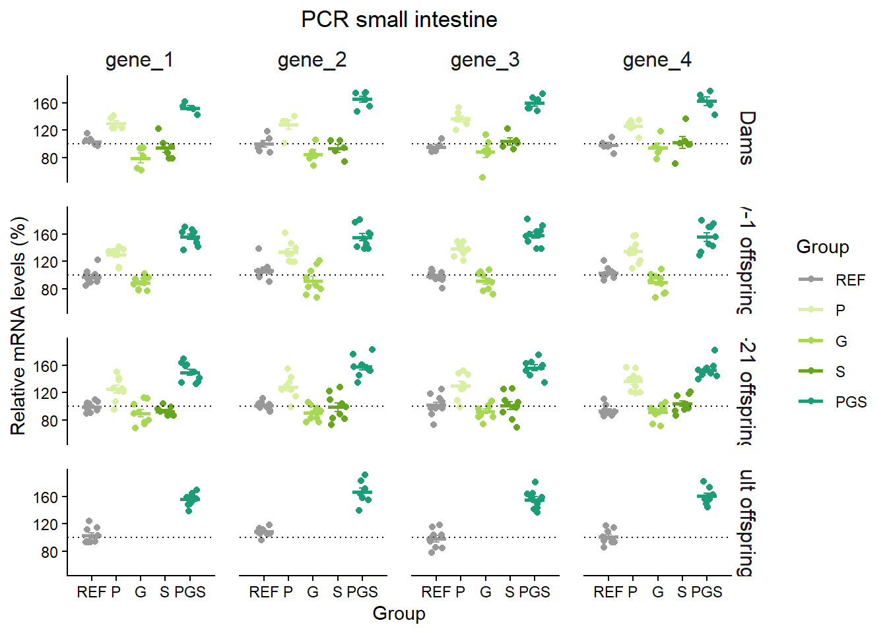
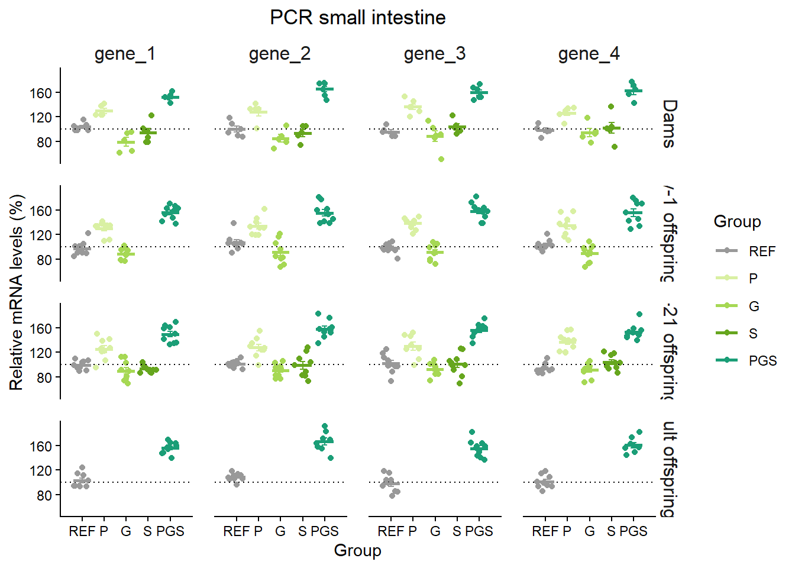

Les dades amb les que treballarem, segurament ja ho heu fet.
library(tidyverse)
── Attaching core tidyverse packages ──────────────────────── tidyverse 2.0.0 ──
✔ dplyr 1.1.4 ✔ readr 2.1.5
✔ forcats 1.0.1 ✔ stringr 1.5.2
✔ ggplot2 4.0.0 ✔ tibble 3.3.0
✔ lubridate 1.9.4 ✔ tidyr 1.3.1
✔ purrr 1.1.0
── Conflicts ────────────────────────────────────────── tidyverse_conflicts() ──
✖ dplyr::filter() masks stats::filter()
✖ dplyr::lag() masks stats::lag()
ℹ Use the conflicted package (<http://conflicted.r-lib.org/>) to force all conflicts to become errors
library(here)
Warning: el paquet 'here' es va construir amb la versió d'R 4.5.2
here() starts at C:/Users/laenc/OneDrive - Universitat de Barcelona/25 PREV-AL-DI/2 Tesis Elsa/R/R basics
library(readxl) library(janitor)
Warning: el paquet 'janitor' es va construir amb la versió d'R 4.5.2
S'està adjuntant el paquet: 'janitor'
Els següents objectes estan emmascarats des de 'package:stats':
chisq.test, fisher.test
library(skimr)
Warning: el paquet 'skimr' es va construir amb la versió d'R 4.5.2
library(broom)
Warning: el paquet 'broom' es va construir amb la versió d'R 4.5.2
library(rstatix)
S'està adjuntant el paquet: 'rstatix'
L'objecte següent està emmascarat per 'package:janitor':
make_clean_names
L'objecte següent està emmascarat per 'package:stats':
filter
Per a fer gràfics R ja et dona opcions per defecte, però per a triar i personalitzar certs aspectes és millor fer-ho amb ggplot (inclòs a tidyverse). Recomano molt tenir la Cheatsheet de ggplot2 impresa per anar consultant les ocpions.
PCR
Per a graficar les dades de PCR, farem un núvol de punts amb línia a la mitjana i barres d’error.
Comencem fent tot el que ja hem explicat
#Carregar els paquets bàsics -------library(tidyverse)library(here)library(readxl)library(janitor)library(skimr)#Importar dades i preprarar-les-------raw_data <-read_excel(here("data", "PCR.xlsx")) #crear dataset amb el que treballaremdata <- raw_data %>%clean_names() %>%mutate(across(c(group, sex, rat, generation), as.factor)) skim(data) #creem long datalongdata <- data %>%pivot_longer(cols="gene_1":"gene_4", names_to="gene", values_to ="value" ) %>%mutate(group =factor(group, levels =c("REF", "P", "G", "S", "PGS")), generation =factor(generation, levels =c( "M", "Cd1", "Cd21", "CA")),gene =factor(gene,levels =c("gene_1", "gene_2", "gene_3", "gene_4")))
Seguidament podem fer un gràfic previ per veure com es comporten els gens en general, sense separar per generació.
Com podeu veure abans de fer el gràfic hem preparat les dades en la mateixa pipeline, ometent els NA i agrupant per generacions. Seguidament li hem demanat al gràfic:
ggplot(aes(x=group, y=value, colour=generation))+ quin és l’eix de les x, quin és l’eix de les y i que determina el color
geom_jitter(position = position_dodge(width = 0.6))+ fer un gràfic de punts amb els valors espaiats
scale_x_discrete(limits = c("REF", "P", "G", "S","PGS"))+ l’ordre en que apareixen els grups a l’eix de les x
facet_wrap(~gene) indica que ho separi en mini gràfics, un per cada gen. També podriem fer servir facet_grid(~) per a separar-ho de manera més controlada, ho veurem al següent.
Anem a personalitzar-lo més i afegir les barres d’error i mitjana. Abans de res hem de crear un dataset que contingui la mitjana i error estàndard de cada grup per cada gen dins de cada generació.
# Compute summary stats per a afegir al gràfic-------summary_data <- longdata %>%na.omit() %>%group_by(generation, gene, group) %>%summarise(mean =mean(value), #calculem mitjanase =sd(value)/sqrt(n()), #calculem error estàndard.groups ="drop" )#canviar estil del gràfic defaulttheme_set(theme_classic()) #definim els colors que volem per grupcolors <-c("REF"="#999999", # Grey"PGS"="#1b9e77", # Green 1"S"="#66a61e", # Green 2"G"="#a6d854", # Green 3"P"="#d9f0a3") # Green 4
Seguidament ja podem fer el gràfic final.
Primer canviem l’ordre en el que apareixeran els gens i el nom del grup de la generació per a que ens surti complet.
#GRÀFIC BO TOTALS------ggplot <- longdata %>%#dataset a graficar en format "long"na.omit() %>%#no tenir en compte els NAggplot(aes(x=group, y=value, colour=group))+geom_jitter()+#gràfic puntsscale_x_discrete(limits =c("REF", "P", "G", "S","PGS"), expand =expansion(add =1))+#afegir espai entre grupsfacet_grid(generation~gene, labeller =labeller(gene = gene_order))+#ordre geom_hline(yintercept =100, color ="black",linetype ="dotted", linewidth =0.5)+geom_errorbar(data = summary_data, aes(x = group, y = mean, ymin = mean - se, ymax = mean + se, width =0.25))+#afegir barres d'errorgeom_errorbar( #afegir línia mitjanadata = summary_data,aes(x = group,ymin = mean,ymax = mean,colour = group),width =0.8,inherit.aes =FALSE,linewidth =1)+scale_colour_manual(values=colors, breaks =c("REF", "P", "G", "S", "PGS"))+labs(title="PCR small intestine", x="Group", y="Relative mRNA levels (%)",colour="Group")+theme(plot.title =element_text(hjust =0.5), strip.text.x =element_text(size =12),strip.text.y =element_text(size =12, hjust =0.75),strip.background =element_blank(),panel.spacing =unit(0.5, "cm")) #espai entre els mini gràficsggplot

geom_hline(yintercept = 100, color = "black",linetype = "dotted", size = 0.5)+ Afegim una línia de punts al 100
geom_errorbar(data = summary_data, aes(x = group_name, y = mean, ymin = mean - se, ymax = mean + se, width = 0.25))+ Afegim les barres d’error
geom_errorbar(data = summary_data, aes( x = group, ymin = mean, ymax = mean, colour = group), width = 0.8, inherit.aes = FALSE, linewidth = 1 )+ Afegim línia a la mitjana (no hi ha manera de fer-ho directe).
labs(title= "PCR small intestine", gràfic x= "Group", eix x y= "Relative mRNA levels (%)", colour= "Group")+ Et permet canviar el nom dels eixos i títol i nom de la llegenda, en aquest cas ens la fa del color però també la podria fer per colour, fill, shape, linetype, size…
Un altre exemple seria triar només una generació, on només canvia el següent
Warning: Using `size` aesthetic for lines was deprecated in ggplot2 3.4.0.
ℹ Please use `linewidth` instead.

I finalment ho guardem, si veiem que surt algo tallat o massa apretat, podem fer la width o height més gran. Aquesta instrucció ens guardarà l’últim plot.